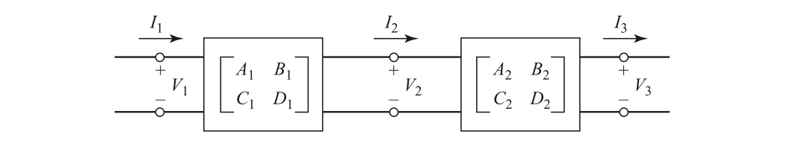

Network Parameters in Circuit Analysis
This article presents S, Z, Y, ABCD parameters and their transformation.
Definition
Impedance Parameter
Admittance Parameter
ABCD Parameter
Also called A Parameter or chain parameter. Note that for convenience of cascading, the definition of current at port 2 is opposite to others.
Hybrid Parameter
G Parameter
Scattering Parameter
For S parameter
Normalized incident and reflective waves are
Power delivered is
Reflection coefficient
Mason's rule
where
- $\Delta$ is the determinant of the graph.
- $y_{in}$ is the input-node variable.
- $y_{out}$ is the output-node variable.
- $G$ is the complete gain.
- $N$ is the total number of forward paths between $y_{in}$ and $y_{out}$.
- $G_k$ is the path gain of the k th forward path between $y_{in}$ and $y_{out}$.
- $L_i$ is the loop gain of a closed loop in the system.
- $L_iL_j$ is the product of the loop gains of two non-touching closed loops.
- $\Delta_k$ is the cofactor value of $\Delta$ for the k th forward path, with the loops touching the k th forward path removed.
It is defined that
- Path: a continuous set of branches traversed in the direction that they indicate.
- Forward path: A path from an input node to an output node in which no node is touched more than once.
- Loop: A path that originates and ends on the same node in which no node is touched more than once.
- Path gain: the product of the gains of all the branches in the path.
- Loop gain: the product of the gains of all the branches in the loop.
To calculate the input reflection coefficient, the following signal graph is used
we have
- $G_1=S_{11}$
- $\Delta_1=1-S_{22}\Gamma_L$
- $G_2=S_{21}\Gamma_L S_{12}$
- $\Delta_2=1$, because the only loop in the graph touches $\Gamma_L$
- $\Delta=1-S_{22}\Gamma_L$
- $S_{11}=\frac{G_1\Delta_1+G_2\Delta_2}{\Delta}$
Transfer Scattering Parameter
Properties
Reciprocal Network
Not containing any active devices or nonreciprocal media, such as ferrites or plasmas。
Lossless Network
All the parameters of $\mathbf{Z}$ and $\mathbf{Y}$ are purely imaginary.
Connection
Parallel-Parallel
Series-Series
Series-Parallel
Parallel-Series
Cascade

Image Impedance
A pair of image impedance $Z_{i1},Z_{i2}$ is defined for reciprocal network as
- $Z_{i1}$ is the input impedance at port 1 when port 2 is terminated with $Z_{i2}$
- $Z_{i2}$ is the input impedance at port 2 when port 1 is terminated with $Z_{i1}$
With ABCD parameter, the input impedance at port 1 when port 2 is terminated with $Z_{i2}$ equals to
Similarly
Since $Z_{in1}=Z_{i1},Z_{in2}=Z_{i2}$, the solution is
When terminated with image impedance $Z_{i2}$, the voltage transfer ratio is
For current
Other
For T

For Pi

Conversion
General
where $\mathbf{E}$ is an identity matrix, $Z_{0,n}$ is the reference impedance of port n. The renormalization of S parameter is as follows.
where $\mathbf{S}$ is the original S parameter matrix, and $\mathbf{S'}$ is the recalculated scattering matrix, $Z_n$ is the reference impedance of port n after the normalizing process, and $Z_{n,before}$ is the reference impedance of port n before the normalizing process.
Two Port
Appendix
Mathematica functions
1 | (* Conversion between Z and Y parameters *) |
Examples
1 | Y2S[({ |
Another way of stating the Mason's rule
where
- $P_n$ is a path that connects the beginning and the ending. And node can be in the path only once.
- $L(1)$ is the first-order loop. It is a closed loop made of branches in the same direction.
- $L(n)$ is the product of $n$ separate $L(1)$.
- $L(n)^{(m)}$ is the n th order loop that is not in contact with path $P_m$.
Reference
For the basic concepts of Z, Y, S, ABCD parameters, refer to
- D. M. Pozar, Microwave Engineering. NJ, Hoboken: Wiley, 1998.
For a detailed conversion process of different parameters, refer to
- S. Jahn, M. Margraf, V. Habchi and R. Jacob, Qucs Technical Papers, available at http://qucs.sourceforge.net/tech/technical.html.
- Post link: https://triblemany.github.io/archives/587faa75/network-parameter.html
- Copyright Notice: All articles in this blog are licensed under BY-NC-SA unless stating additionally.